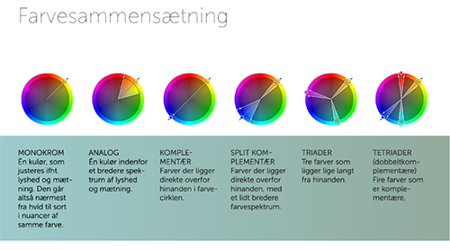

Det er forskelligt fra person til person hvordan farver påvirker os. De farver der tiltrækker en, kan være afhængig af ens personlighed eller hvor man står i sin personlige udvikling.
Farvers betydning kan også variere i forhold til, hvilken kultur man er fra. I den vestlige kulturkreds ses rød farven som fare, erotik etc., hvorimod i Kina forbinder man rød farven med glæde. I den vestlige del af verden benytter man hvid farve ved bryllupper, mens i Indien hvid farven symboliserer begravelse
http://www.visible.dk/videnom/Farvers-betydning.php
Farver tilføjer ikke bare en behagelige kvalitet til designet – det forstærker det. - Pierre Bonnard
Farver.pdf
Ved et eksperiment, påviste Isaac Newton i 1600-tallet lysets brydning gennem et prisme. Gennem hans eksperimenter konkluderede han at blå, gul og rød kunne ikke blandes af andre farver. Det fik ham til at han kaldte disse farver som primære farver
Senere i 1700-tallet udviklede Johannes Itten farvehjulet og fandt frem til de sekundære og tertiære farver. De sekundære farver er blandet af to primære farver. Farver som var blandet af en primær og en sekundær farve blev kaldt tertiære farver.
Farver som står overfor hinanden, kaldes komplementære for at skabe optisk kontrast.
Farver som står overfor hinanden, kaldes komplementære for at skabe optisk kontrast.
Vi kan også bruge farvesammensætning til at kombinere flere farver, som er tæt på hinanden og som spiller godt sammen.
- farvelære.pdf
- Interfacedesign s/ 173-187
Som multimediedesigner er det vigtigt at have kendskab til farversystemer. De forskellige farvesystemer bruger vi til at kunne veksle mellem tryksager eller digital grafik. I forhold til hvordan bruger oplever farver igennem et produkt, er det afgørende at have kendskab til farversystemer.
Et additiv farvesystem, det betyder at man tilføjer lys og denne bruger vi til digital grafik. Alle skærme består af små pixels og jo flere der er, jo bedre bliver ens skærm og hver enkelt pixel indeholder RGB Farver. - f.eks. mobiltelefoner, tv-skærme og computere…
Et subtraktivt farvesystem, der betyder at man trækker lys ud og denne bruges til tryksager - f.eks. plakater, bøger, brochurer, tøj…
Jo flere farver, des mørkere bliver det. Selvom man lægger alle farverne sammen, vil det ikke blive helt sort, derfor tilføjer man en sort.
Kulør, mætning og lyshed.
Hue er en graduering eller variation af en farve, hvor det er op til saturation hvor meget gråtone der kommer i. Man blander til sidst brightness, hvor man blander sort eller hvid i for at opnå den ønskede farve.
https://engedal.it/forskellen-paa-cmyk-rgb-farver/
farvelære.pdf
Interfacedesign s/ 173-187
Kulør, mætning og lyshed.
Farver påvirker os både fysisk og følelsesmæssigt. Det er ikke helt tilfældigt at netto bruger gul farve eller danske bank der bruger blå farve. Det er netop blevet valgt af webdesigneren. Alle farver signalerer forskellige ting og det er vigtigt at man finder ud af det som noget af det første, hvad ens virksomhed/webshop skal fortolkes igennem farver.
Visse farver kan have en energiske eller ophidsende effekt hvor andre farve har en beroligende effekt. I den forbindelse associeres de forskellige farver af både følelsesmæssige, fysiske og kulturelle faktorer.
Selvom det kan være svært at opsætte en præcis formel for farvernes psykologiske betydning, har vi alligevel nedenstående, der kan hjælpe os med at forstå traditionelt associeres med i den vestlige kultur.
Chapman 2010, Cao 2015, Soegaard 2018b
Interfacedesign s/ 181-187
farvelære.pdf
https://www.oralb.dk/da-dk
Behagelige blå farver der giver en form for tryghed og ro. Danner en vis sikkerhed overfor kunderne og en god shoppe oplevelse.
Farven blå står også indenfor troværdighed, produktivitet og det er hjemmesiden go til at give forbrugerne følelsen af. For man får lyst til at købe produktet og får følelsen af, man er sikker i sit køb.
https://www.monsterenergy.com/
Ingen vejledning med farver, meget mørk hjemmeside, virker for simpel og uoriginal.
De gør brug af farven grøn som kendertegner succes, naturlighed hvilket deres brand ikke er. De sælger energidrink, som er et usundt og abnormt produkt.